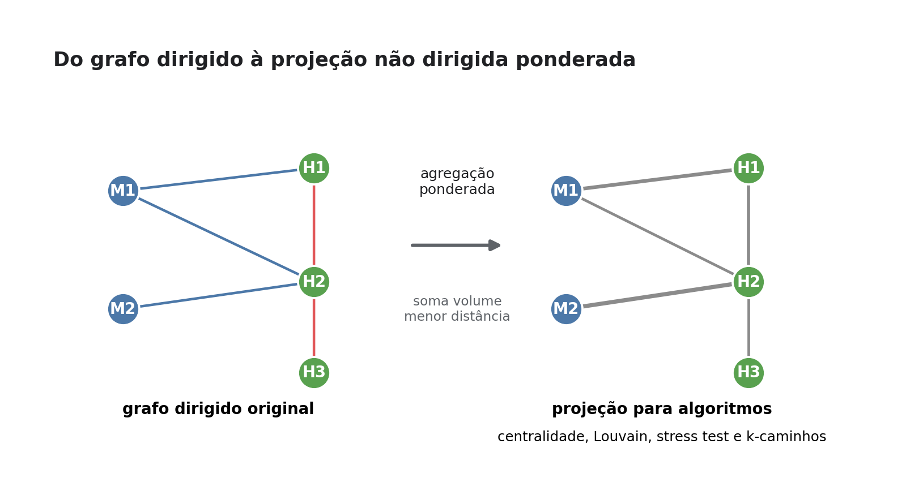
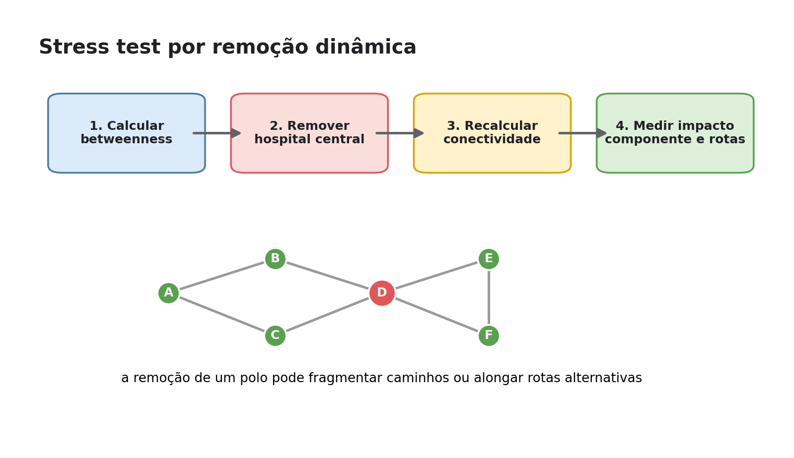
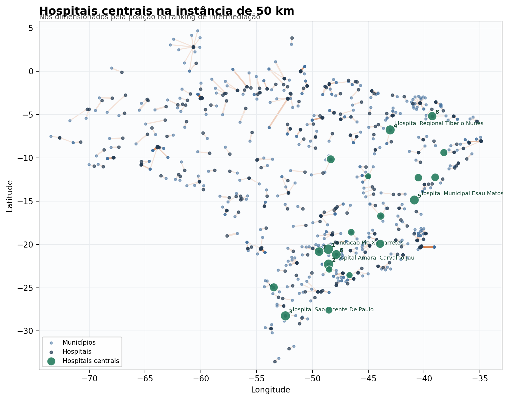
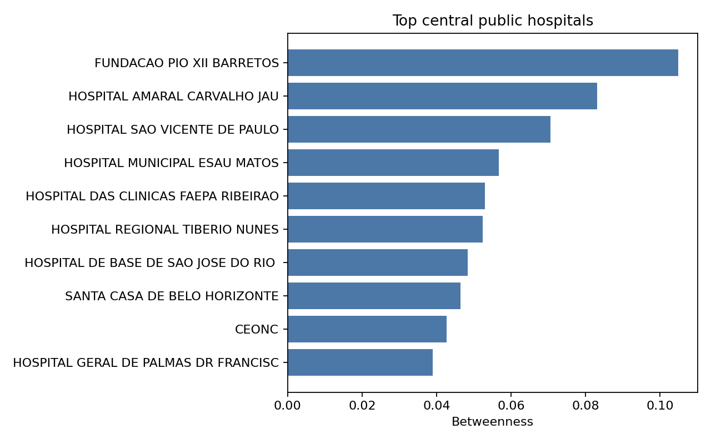
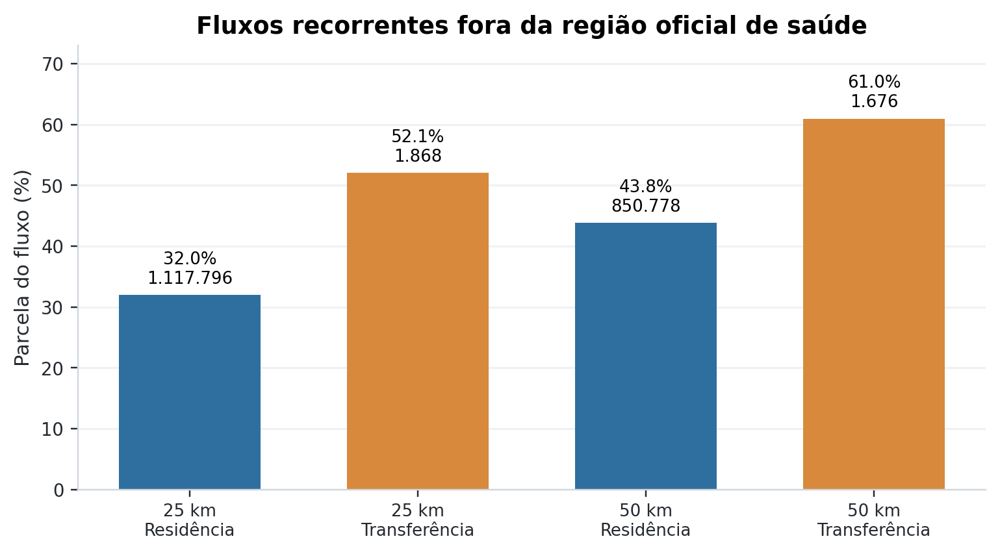
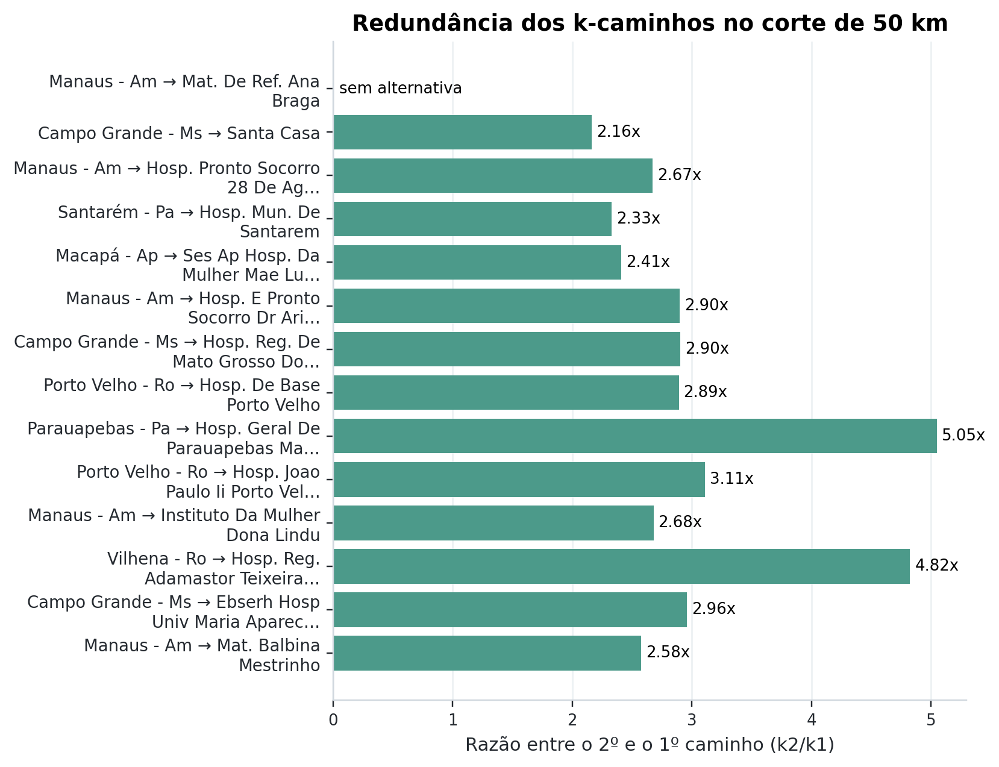
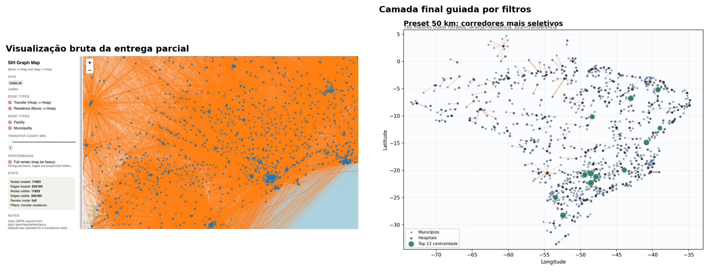
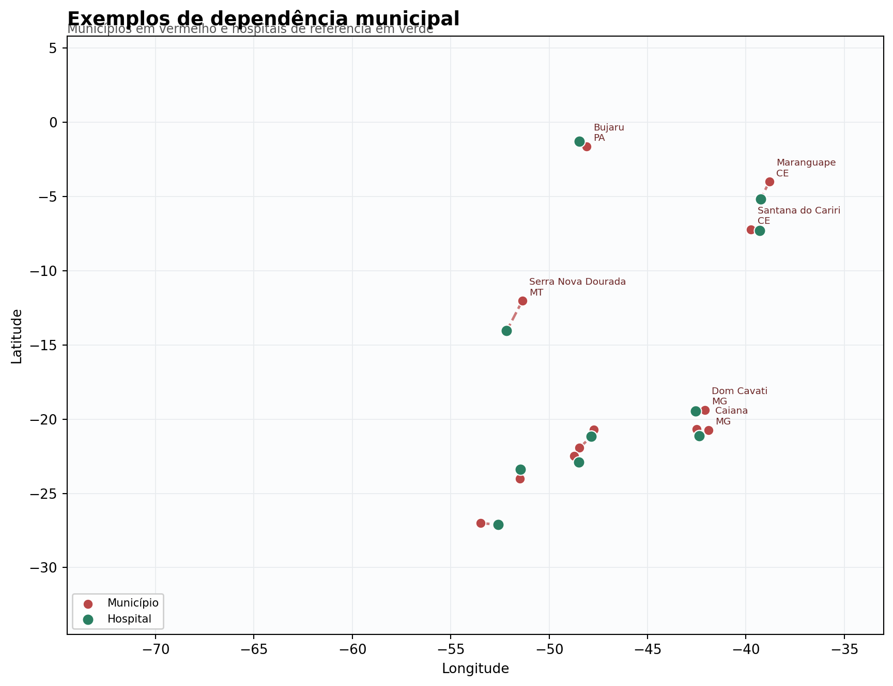

← → tópicos · ↑ ↓ detalhes
MC859 · Entrega final
Análise de Fluxos e Resiliência do SUS via Teoria dos Grafos
Modelagem de internações e transferências hospitalares públicas em 2021 como uma rede nacional de acesso realizado.
MC859 · Entrega final
Modelagem de internações e transferências hospitalares públicas em 2021 como uma rede nacional de acesso realizado.
Resumo em uma frase
linhas SIH reconciliadas em 2021.
hospitais públicos/SUS presentes no grafo.
arestas no escopo público final.
Motivação
A rede pública hospitalar observada oferece alternativas locais ou apenas parece robusta quando vista no agregado?
Leitura de grafos
Dados
Internações, município de residência, hospital, perfil clínico e desfecho.
Identificação de hospitais públicos/SUS e região oficial de saúde.
Códigos municipais, UFs e centróides territoriais quando faltava coordenada CNES.
As tabelas derivadas usadas na entrega foram publicadas no Zenodo: doi.org/10.5281/zenodo.20805195.
Escala do recorte
| Medida | Valor | Interpretação |
|---|---|---|
| Linhas SIH reconciliadas | 11.629.005 | Base anual de acesso realizado. |
| Nós no grafo nacional original | 11.823 | Municípios e estabelecimentos. |
| Arestas no escopo público | 188.035 | Fluxos residência-hospital e hospital-hospital. |
| Coordenada CNES direta | 569 hospitais | Limitação espacial importante. |
Metodologia
Inferência de transferências
Depois de um sinal de transferência, o algoritmo procura nova internação entre 24 e 48 horas após a saída, exige continuidade clínica por capítulo CID-10 e usa o CNES dessa nova internação como hospital destino.
Projeção para algoritmos

Implementação
Coleta, validação e tabelas analíticas.
Centralidade, comunidades, stress test, k-caminhos e regiões.
Mapas, camada interativa e artefatos de apresentação.
Código e reprodutibilidade
Algoritmos
| Método | Pergunta | Uso na apresentação |
|---|---|---|
| Betweenness | Quais hospitais conectam rotas? | Polos estruturais. |
| Louvain | Que blocos funcionais emergem? | Comunidades não oficiais. |
| Supressão | A rede fragmenta ao remover polos? | Robustez global. |
| K-caminhos | As alternativas são realmente próximas? | Redundância local. |
Stress test

Resultados principais
Hospitais especializados e regionais aparecem com alta intermediação.
Fluxos recorrentes cruzam regiões oficiais de saúde.
Alguns municípios concentram o fluxo filtrado em poucos destinos externos.
Polos estruturais


Regiões oficiais

No corte de 50 km, 43,80% do fluxo residência-hospital filtrado cruza região oficial de saúde; cruzar UF explica apenas uma parte pequena desse fenômeno.
Redundância

razão média entre segundo e primeiro caminho mais curto nos pares avaliados com alternativa.
Visualização

Camadas da demonstração

Limitações
Continuidade
Conclusão
A contribuição central é revelar dependências locais que a conectividade nacional, sozinha, pode esconder.
Mensagem final
Essa leitura é útil como ferramenta exploratória para priorizar análises regionais mais precisas.